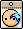

I. What is a bossing mule and why make one?
Bossing mules are another name for an alternative character (not your main) that you use primarily as a way to kill bosses for mesos.
Are they efficient for mesos?
Not really, but it's a more detailed answer in practice. Farming on a character with max meso rate in the Arcane River will likely give you more bang for your buck, especially on a totem. But there are a few reasons why you might want to make a bossing mule instead:
- You dislike farming or want to minimize it
- You like bossing or want to do more of it
- You find early progression fun!
- You want to try other classes, especially if you want to naturally invest in them (why not make them a bossing mule as well!)
- Kanna's Kishin will be having its spawn boosting effect removed which will reduce the efficiency of meso farming on Kanna. At the same time, future patches will be increasing the value of boss crystals anywhere from around 1.5x to 2x what they are now. That means that bossing crystals will become even more valuable.
If you are making a bossing mule with the intention of getting high returns then you should consider a different approach. It's not a very efficient way to earn meso. This is especailly true so early on without legion/links/excess node stones. I recommend people make them if they want to boss more, make an alternative source of money, try a new class and/or dislike farming.
Do I need high legion/links?
Both help tremendously. Someone with 8k legion will have a significantly easier time than someone with 2k legion for two primary reasons: Crit Rate and IED. Crit Rate remains difficult to obtain without some intentional investments hence why classes with high innate crit rate are skewed more favorably as bossing mules. A lack of IED, however, can be made up for by cubing for IED which I'll discuss later.
Do I need to invest a lot of mesos? Potential scrolls? Familiars? Nodes?
The answer is: it depends. It depends on whether you want to. If you are okay with distributing some potential gains from your main to your bossing mule, then go for it! There isn't a rule against it. Likely, it's at a point where the potential gains for your main are minimal so it's less a concern. If you're still growing your main and every node will be big for them, maybe hold off on any node transfers or a bossing mule at all.
It also depends on how fast you want to grow the bossing mule and how much stronger you need it to be. It's possible to start from 'scratch' (e.g. using legion/links/starting hyper teleport rock money/de minimis things) and hit 3-doors in 10 days or less if you know what to do and can play enough in that time. Throwing over 1B and 40 nodes, however, would make that process tremendously easier. Any leftover potential scrolls, mastercraft cubes, power elixirs, etc. just speed up your progression.
Ultimately, there is a 'sweet spot answer' where your investment helps a lot, but isn't too much. In my opinion: ~500 to 1B mesos, any nodes you can afford (20+), and the small things (regular potential scrolls, occults, power elixirs) make the whole process very smooth. But you can also progress without all this, so don't be discouraged (especially if you're a newer/returning player and 1B mesos or 20 nodes is not a small thing).
How much money can I make?
As you see in the chart below, the money you can make depends on how far you want to take your bossing mule. The 5x change will be happening this year as well. There is another change (dynamic crystal change) that will slightly nerf some of the lower weekly bosses' pricing, but this won't be a huge impact. For ease, I'll ignore that component here. Also consider other worthwhile dailies such as NMag or NArk.
| Boss | 3x | 5x | |
|---|---|---|---|
| Easy Cygnus* | 33,750,000 | 56,250,000 | |
| Hard Hilla | 38,400,000 | 64,000,000 | |
| Chaos Pink Bean | 43,450,000 | 72,416,667 | |
| Normal Cygnus | 48,600,000 | 81,000,000 | |
| Princess No | 48,600,000 | 81,000,000 | |
| Chaos Zakum | 48,600,000 | 81,000,000 | |
| Chaos Pierre | 48,600,000 | 81,000,000 | |
| Chaos Von Bon | 48,600,000 | 81,000,000 | |
| Chaos Crimson Queen | 48,600,000 | 81,000,000 | |
| Total (-ECyg*): | 373,450,000 | 622,416,667 | |
| Hard Magnus | 57,037,600 | 95,062,667 | |
 |
Chaos Vellum | 63,037,500 | 105,062,500 |
| Chaos Papulatus | 79,350,000 | 132,250,000 | |
| Akechi Mitsuhide | 86,400,000 | 144,000,000 | |
| Total: | 285,825,100 | 476,375,167 | |
| Cumulative Total: | 659,275,100 | 1,098,791,833 | |
| Normal Lotus | 97,537,500 | 162,562,500 | |
| Normal Damien | 101,400,000 | 169,000,000 | |
| Total: | 198,937,500 | 331,562,500 | |
| Cumulative Total: | 858,212,600 | 1,430,354,333 | |
| Normal Guardian Slime | 102,966,000 | 171,610,000 | |
| Easy Lucid | 105,337,500 | 175,562,500 | |
| Total: | 208,303,500 | 347,172,500 | |
| Cumulative Total: | 1,066,516,100 | 1,777,526,833 |
As an example, in my (RAonDuty) experience, creating a character with a tera-burn and utilizing events, a 3-door bossing character can be made within 2b mesos.
In other words, ~5 weeks of 3-door bossing should recoup costs and will produce a profit!
Great, I'm interested - when should I make one and what class do I make?
It depends - as always. You can make alts whenever you want, especially if you like making alts. But in terms of "efficiency," a good time is when your main hits a comfortable stop for arcane force (examples are 235 for all symbols unlocked, ~245 to potentially be in HLucid/HWill parties, 250 for HWill parties, etc.). If you're still at, say, 224, you have lots of gain to just progress a bit further on your main. But again, if you want to take a break or a detour, the world is your proverbial oyster!
A good time to make one is during events (which can provide items, nodes, or make leveling easier) or during tera/mega-burns (which, similarly, make the process easier and provide nodes).
II. What class(es) should I make?
In terms of what class to make, the answer is always the same in theory: whichever one you enjoy! A class that is good but one you hate playing will be a chore, a burden, or a failed mule-in-the-making.
But, classes are relative to each other and some classes are just better suited for the bossing mule process (especially from a non-carry perspective). These classes often have, but not necessarily all:
- Innate crit rate
- Innate IED or not a high need for IED
- Convenient iFrames and/or Dark Sight-type skills
- Get a relatively higher boost from nodes or mesos invested
- Just have a lot of innate skill power (so less reliant on boost nodes)
- Aren't as reliant on their Inner Ability (e.g. Attack Speed +1, Buff Duration) or Attack Speed 0 to feel good
- Have a class bind
NOTE: These classes are not in any particular order, just a list of some relatively strong/easy-to-fund bossing mules
| Class | Reasons why they make a good bossing mule |
|---|---|
| Dawn Warrior | Innate crit rate, incredibly easy nodes (only need a few), class bind, superstance, ignores damage reflect during burst, low skill floor |
| Ark | Innate crit rate, high burst, class bind, superstance, easy bossing boost node |
| Dual Blade | Innate crit rate, easy burst, darksight & 2.5 iframes, not as reliant on IED (innate IED on main skills), low skill floor (easy to pick up) |
| Hero | High burst, low-CD iframe, incredible damage due to free fd and great with 0 ASPD, World Reaver |
| Aran | Lots of free final damage, amazing mobility, class bind, high innate crit rate and IED |
| Kanna | Boost nodes give higher damage than others, great survivability, two binds, iframe (1 fake iframe [ethereal form], 1 bad iframe [requires 60 seconds of charging (if you die, you have to charge the iframe again), on a 180 second cooldown]), domain(needs to be maxed or close to max for it to have a reasonable cooldown/duration) |
| Hoyoung | Can avoid boosting certain skills in favor of one "boss" boost node, strong without much funding, very fun, excellent kit, low skill floor with high skill ceiling |
| Demon Slayer | Innate crit rate and IED, 3 iframes, class bind, good mobility options, good sustained damage |
| Kaiser | Easy bossing boost node, ignores damage reflect while transformed, innate crit rate |
| Cannoneer | Innate crit rate, iframe, amazing mobility |
| Kain | Easy and high burst, iframe, darksight-dash |
| Lara | Easy to train, strong and quick burst, bind for every burst, iframe, damage reduction, great mobility (up jump/hover/flash jump/teleport), easy boost nodes |
| Adele | Big damage, bind, iframe, low skill floor, high ceiling |
| Cadena | Big damages and a bind. Not too hard to play at an average skill level |
| Night Walker | Decent damage, high mobility, backstep, has a bind (a bit scuffed tho), gets dark sight while attacking, and also dark sight on/off toggle |
| Jett |
III. How do I effectively gear my bossing mule?
In theory, bossing mules can be treated no differently than your main or sub-main. Especially if they do become a submain or a class you want to invest in, they deserve all the love, too!
For the sake of this mini-guide, however, the priority is quick, convenient, efficient, and, especially in regards to Blackguard, a non-carry approach to equipment and progression.
The priorities to bossing mule progression include:
- Level your bossing mule to 210/215/220+ (each set of five levels matter not necessarily for AF, which you don't really need, but for the extra node slot in your V-matrix. A sweet spot is 215, in my opinion).
-
Find your source of money - for some, that's transferring over
money from your main. For others, it's self-contained on the
character. To that extent, the source of money will come from:
- Maple Tour/Ursus (~1B a week)
- Daily Bossing (e.g. NZak, NHilla, CHT, 4 doors RA, MM Ranmaru, E/N Mag, E/N Pap, Pink Bean, E/NArk)
- Weekly Bossing (you can start to push bosses like Easy Cygnus, Hard Hilla, and 3-Doors early for the sake of money)
-
Fill out equipment slots - some suggestions are:
Type Equipment Preference Rings Horntail Ring 2 Cracked Gollux Ring 2 Solid Gollux Ring 2 NLC Ring 2 Event Ring(s) 1 Noble Ifia Ring 2 Non-potential Rings 3 Pocket Pink Bean Cup 1 Hilla Cup 2 Pendants Mechanator 1 Dominator 1 Horntail 3 Chaos Horntail 2 Cracked Gollux 3 Solid Gollux 2 Overall/Top/Bottom/Hat 
Frozen 2 
Von Leon 3 
Necromancer 2 
Empress 2 
Pensalir 3 Root Abyss 1 Face/Eye  Zakum 1 Pink Bean 1 Earrings Horntail 1 Cracked Gollux 2 Solid Gollux 2 Hilla 1 Belt Pink Bean Belt 1 Zakum Belt 1 Cracked Belt 3 Solid Belt 2 Cape Wings of Fate 1 Frozen 2 Nova Cape 2 Von Leon 3 Pensalir 2 Tyrant Cape 1 Shoulder 
Magnus 1 Empress 2 Weapon Sweetwater 4 Frozen 6 Von Elon 7 Necromancer 6 Empress 5 Utgard 7 Root Abyss 3 Fake Abso 2 Fake Arcane 1 Secondary Regular 1 PNo 1 Carfted/Misc. 1 Title Anything 2 Medal Anything 1 Totems Afterlands 2 Antique 1 -
Upgrade your items in this order:
- Emblem to Legendary (aim for 2Ls, likely 1 line IED and 1 line ATT/MATT)
- Secondary to Legendary (but do research on whether your secondary will be easily replaced, e.g. shield classes) (aim for 2Ls, likely 1 line IEd and 1 line ATT/MATT)
- Weapon to Epic (6% MATT/ATT)
- 10 star/Rare potential all other items for 3% stat
- Slowly push potential of items to Epic for 6/9% stat
- Flame items that receive boss-flames with free/bought/event flames to get a useable flame (see other flame calculators/discord for this measure)
- OPTIONAL - push any long-term items to 17* if desired, especially for more stronger bossing mules
- Find familiars - try to at least get one familiar that gives 15% IED. This can be done by either using random cards you find OR transferring any familiars from other characters.
-
Invest nodes into your character. The strategy varies on your class.
Examples include:
- Classes with a single boost node (e.g. Dawn Warrior)
- Classes with strong V skills (e.g. Dual Blade, Hayato)
- Classes with many boost nodes, but one bossing node (e.g. Ark, forcing you to decide between long term boost gain and just bossing mule boost gain)
- Classes with multiple bossing nodes (e.g. Kain, making it difficult to maximize node gains)
By the end, you should have a character that looks something like that for a relatively cheap investment (consider less than 3B + ~40 nodes at most, can get away with less. Take advantage of events!)
- Level 210-220
- Either moderately leveled V skills OR moderately leveled boost nodes (take advantage of being able to stack multiple boost nodes of the same skills e.g. A/B/C and B/C/A and C/B/A)
- 10 stars, Rare or Epic potential Equipment or better, with appropriate % Stat on each
- Legendary Emblem and Secondary with 1-2L IED and 1-2L Att/Matt
- At least one familiar of 15% IED
This puts you at a comfortable bossing range for all bosses 3-doors and below (and depending on your class and comfort and IED), able to do CVell and equivalent bosses as well as do a struggle Lotus (although not a smooth/quick one)